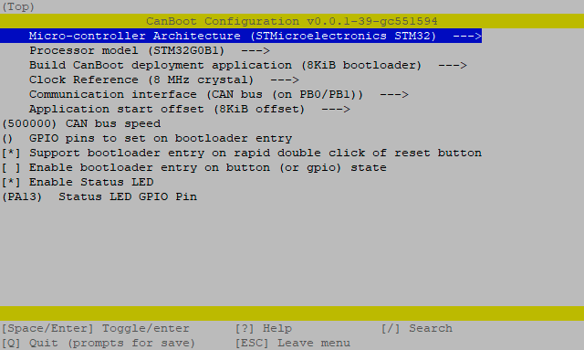

CanBoot bootloader (optional)
Canboot is a bootloader for MCUs to be able to update/flash them via CANBUS.
With CanBoot there is no physical intervention (e.g. pressing the boot button) required to flash/update firmware to the
MCUs.
This guide is tested with the following boards:
- BTT EBB36 & 42 v1.1
- BTT EBB36 & 42 v1.2
- BTT EBB SB2209/2240 v1.0
This guide will not work with the following boards:
- BTT EBB36 & 42 v1.0
These boards have a different MCU.
Download CanBoot
Clone the CanBoot repository:
To add CanBoot to your moonraker update manager, add this section to your config (optional):[update_manager canboot]
type: git_repo
origin: https://github.com/Arksine/CanBoot.git
path: ~/CanBoot
is_system_service: False
Configure CanBoot
Open the config dialog with the following commands:
and use following config settings:- Micro-controller Architecture: STMicroelectronics STM32
- Processor model: STM32G0B1
- Build CanBoot deployment application: 8KiB bootloader
- Clock Reference: 8 MHz crystal
- Communication interface: CAN bus (on PB0/PB1)
- Application start offset: 8KiB offset
- CAN bus speed: 500000
- Support bootloader entry on rapid double click of reset button: check (optional but recommend)
- Enable Status LED: check
- Status LED GPIO Pin: PA13
this should then look like this:

use q for exit and y for save these settings.
These lines just clear the cache and compile the CanBoot bootloader:
Flash CanBoot
Before you start the flashing process, disconnect the heater from the board!
Up to version v1.1, the heater output is switched to on in DFU mode while in this mode!
This can lead to a fire! 🔥
Like in the next picture where the door bell ringed 🔔
In version v1.2, this pin has changed because of this issue.
First, you have to put the board into DFU mode. To do this, press and hold the boot button and then disconnect and
reconnect the power supply, or press the reset button on the board. With the command dfu-util -l, you can check if the
board is in DFU mode.
If dfu-util can discover a board in DFU mode it should then look like this:
 If this is not the case, repeat the boot/restart process and test it again.
If this is not the case, repeat the boot/restart process and test it again.
If your board is in DFU mode, you can flash CanBoot with the following command:
Now press the reset button and if the flash process was successfully one LED should blink now.Update CanBoot
If you want to update CanBoot, you have multiple possible ways to do this.
Update CanBoot via USB
If you want to update CanBoot via USB, you have to plug in a USB cable and continue with the "old" guide here: Flash CanBoot to the EBB
Update CanBoot via CAN
Since the board can only be addressed via CAN, further CanBoot updates must also be flashed to the board via CAN. This is very easy with the CanBoot bootloader: